Equations and Inequality Constraints
PHREEQC expands on previous approaches by the inclusion of a more complete set of mole-balance equations and the addition of inequality constraints that allow for uncertainties in the analytical data. Mole-balance equations are included for (1) each element or, for a redox-active element, each valence state of the element, (2) alkalinity, (3) electrons, which allows redox processes to be modeled, (4) water, which allows for evaporation and dilution and accounts for water gained or lost from minerals, and (5) each isotope (Parkhurst, 1997). Also included are (6) a charge-balance equation for each aqueous solution, and (7) an equation that relates uncertainty terms for pH, alkalinity, and total dissolved inorganic carbon for each solution. Furthermore, inequalities are used (8) to constrain the size of the uncertainty terms within specified limits, and (9) to constrain the sign of the mole transfer of reactants.
The unknowns for this set of equations and inequalities are (1) the mixing fraction of each aqueous solution  , (2) the mole transfers of minerals and gases into or out of the aqueous solution
, (2) the mole transfers of minerals and gases into or out of the aqueous solution  , (3) the aqueous mole transfers between valence states of each redox element
, (3) the aqueous mole transfers between valence states of each redox element  (the number of redox reactions for each redox element is the number of valence states minus one), and (4) a set of uncertainty terms that account for uncertainties in the analytical data
(the number of redox reactions for each redox element is the number of valence states minus one), and (4) a set of uncertainty terms that account for uncertainties in the analytical data  . Unlike previous approaches to inverse modeling, uncertainties are assumed to be present in the analytical data, as evidenced by the charge imbalances found in all water analyses. Thus, the uncertainty terms
. Unlike previous approaches to inverse modeling, uncertainties are assumed to be present in the analytical data, as evidenced by the charge imbalances found in all water analyses. Thus, the uncertainty terms  represent uncertainties due to analytical error and spatial or temporal variability in concentration of each element, element valence state, or alkalinity,
m
, in each aqueous solution
q
. The uncertainty terms can be constrained to be less than specified uncertainty limits,
represent uncertainties due to analytical error and spatial or temporal variability in concentration of each element, element valence state, or alkalinity,
m
, in each aqueous solution
q
. The uncertainty terms can be constrained to be less than specified uncertainty limits,  , which allows user-supplied estimates of uncertainty for each element or element valence state to limit the deviation from the analytical data (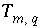
) of revised element concentrations (
, which allows user-supplied estimates of uncertainty for each element or element valence state to limit the deviation from the analytical data (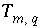
) of revised element concentrations ( ) that are calculated in mole-balance models.
) that are calculated in mole-balance models.
Mole-Balance Equations
The mole-balance equations, including the uncertainty terms and redox reactions, for elements and valence states are defined as
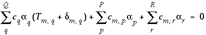
, (131)
where
Q
indicates the number of aqueous solutions that are included in the calculation,  is the total moles of element or element valence state
m
in aqueous solution
q,
is the total moles of element or element valence state
m
in aqueous solution
q,
 can be positive or negative,
can be positive or negative,  is the coefficient of master species
m
in the dissolution reaction for phase
p
(by convention, all chemical reactions for phases are written as dissolution reactions; precipitation in mole-balance models is indicated by negative mole transfers,
is the coefficient of master species
m
in the dissolution reaction for phase
p
(by convention, all chemical reactions for phases are written as dissolution reactions; precipitation in mole-balance models is indicated by negative mole transfers,  ),
P
is the total number of reactive phases, 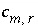
is the stoichiometric coefficient of secondary master species
m
in redox reaction
r
, and
R
is the total number of aqueous redox reactions. The last aqueous solution, number
Q
, is assumed to be formed from mixing the first
Q-1
aqueous solutions, or, 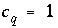
for 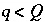
and 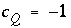
.
),
P
is the total number of reactive phases, 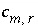
is the stoichiometric coefficient of secondary master species
m
in redox reaction
r
, and
R
is the total number of aqueous redox reactions. The last aqueous solution, number
Q
, is assumed to be formed from mixing the first
Q-1
aqueous solutions, or, 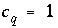
for 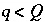
and 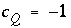
.
For PHREEQC, redox reactions are taken from the reactions for secondary master species defined in
SOLUTION_SPECIES input data blocks. Dissolution reactions for the phases are derived from chemical reactions defined in
PHASES and
EXCHANGE_SPECIES input data blocks (see "Description of Data Input").
Alkalinity-Balance Equation
The form of the mole-balance equation for alkalinity is identical to the form for other mole-balance equations:
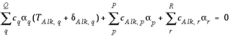
, (132)
where
Alk
refers to alkalinity. The difference between alkalinity and other mole-balance equations is contained in the meaning of 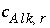
and 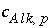
. What is the contribution to the alkalinity of an aqueous solution due to aqueous redox reactions or the dissolution or precipitation of phases? The alkalinity contribution of a reaction is defined by the sum of the alkalinities of the aqueous species in a redox or phase-dissolution reaction. PHREEQC defines  and
and  as follows:
as follows:
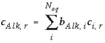
, (133)
and
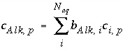
, (134)
where 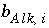
is the number of equivalents of alkalinity per mole of species
i
, 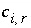
is the stoichiometric coefficient of the species
i
in the aqueous redox reaction
r
, and 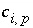
is the stoichiometric coefficient of the species
i
in the dissolution reaction for phase
p
.
Electron-Balance Equation
The mole-balance equation for electrons assumes that no free electrons are present in any of the aqueous solutions. Electrons may enter or leave the system through the aqueous redox reactions or through the phase dissolution reactions. However, the electron-balance equation requires that any electrons entering the system through one reaction be removed from the system by another reaction:
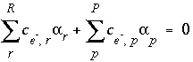
, (135)
where 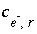
is the number of electrons released or consumed in aqueous redox reaction
r
, and 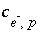
is the number of electrons released or consumed in the dissolution reaction for phase
p
.
Water-Balance Equation
The mole-balance equation for water is
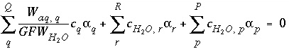
, (136)
where 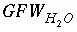
is the gram formula weight for water (approximately 0.018 kg/mol), 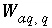
is the mass of water in aqueous solution  , 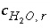
is the stoichiometric coefficient of water in aqueous redox reaction
r
, and 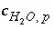
is the stoichiometric coefficient of water in the dissolution reaction for phase
p
.
, 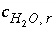
is the stoichiometric coefficient of water in aqueous redox reaction
r
, and 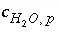
is the stoichiometric coefficient of water in the dissolution reaction for phase
p
.
Charge-Balance Equation
The charge-balance equations for the aqueous solutions constrain the unknown  's to be such that, when the
's to be such that, when the  's are added to the original data, charge balance is produced in each aqueous solution. The charge-balance equation for an aqueous solution is
's are added to the original data, charge balance is produced in each aqueous solution. The charge-balance equation for an aqueous solution is
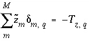
, (137)
where  is the charge imbalance in aqueous solution
q
calculated by a speciation calculation and 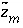
is defined to be the charge on the master species plus the alkalinity assigned to the master species,
is the charge imbalance in aqueous solution
q
calculated by a speciation calculation and 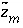
is defined to be the charge on the master species plus the alkalinity assigned to the master species,  . For alkalinity, 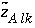
is defined to be -1.0. The summation ranges over all elements or element valence states and includes a term for alkalinity, just as charge balance is commonly calculated by summing over cationic and anionic elements plus a contribution from alkalinity. In the definition of
. For alkalinity, 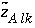
is defined to be -1.0. The summation ranges over all elements or element valence states and includes a term for alkalinity, just as charge balance is commonly calculated by summing over cationic and anionic elements plus a contribution from alkalinity. In the definition of  , the alkalinity of the master species is added to the charge for that master species to remove the equivalents for the element or element redox state that are already accounted for in the alkalinity. For example, the contribution of carbonate species in equation 137 is zero with this definition of
, the alkalinity of the master species is added to the charge for that master species to remove the equivalents for the element or element redox state that are already accounted for in the alkalinity. For example, the contribution of carbonate species in equation 137 is zero with this definition of  (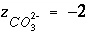
, 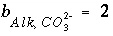
, 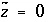
); all of the charge contribution of carbonate species is included in the alkalinity term of the summation.
(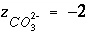
, 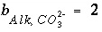
, 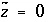
); all of the charge contribution of carbonate species is included in the alkalinity term of the summation.
Isotope-Balance Equations
Geochemical mole-balance models must account for the isotopic composition as well as the chemical composition of the final aqueous solution. In general, isotopic evolution requires solving a differential equation that accounts for fractionation processes for precipitating solids and exsolving gases. In the development presented here, only the simpler case of isotopic mole balance, without fractionation, is considered. This approach is correct if aqueous mixing occurs and (or) all isotope-bearing phases dissolve, but is approximate when isotope-bearing phases precipitate or exsolve. The approach does not calculate isotopic compositions of individual redox states within the aqueous phase, only net changes in isotopic composition of the aqueous phase are considered.
Mole balance for an isotope can be written as
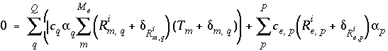
, (138)
where 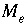
is the number of valence states of element 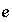
, 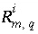
is the isotopic ratio [which may be delta notation (for example 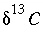
or 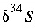
), 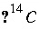
activity in percent modern carbon, or any units that allow linear mixing] for isotope  for valence state 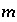
in aqueous solution
for valence state 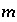
in aqueous solution  ,
,  is an uncertainty term for the isotopic ratio for a valence state in the aqueous solution,
is an uncertainty term for the isotopic ratio for a valence state in the aqueous solution,  is the isotopic ratio of element
is the isotopic ratio of element  in phase 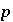
, and 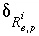
is an uncertainty term for the isotopic ratio of the element in the phase.
in phase 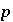
, and 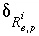
is an uncertainty term for the isotopic ratio of the element in the phase.
Expanding equation 138 and neglecting the products of
's gives the following approximation:
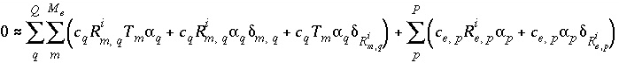
. (139)
Commonly, 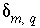
will be small relative to the concentration of the valence state or 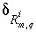
for the isotopic ratio will be small relative to the isotopic ratio itself. In either case, the products of  's that are neglected will be small relative to the other terms and equation 139 will be a good approximation. The approximation in equation 139 will be poor only if the concentration of the valence state and the isotopic ratio have large calculated
's that are neglected will be small relative to the other terms and equation 139 will be a good approximation. The approximation in equation 139 will be poor only if the concentration of the valence state and the isotopic ratio have large calculated  's. In this case, the overall effect is that the true values of the uncertainty terms will be larger than specified uncertainty limits. The neglected terms can be made smaller by decreasing the uncertainty limits on either the valence-state concentrations or the isotopic ratios for each aqueous solution.
's. In this case, the overall effect is that the true values of the uncertainty terms will be larger than specified uncertainty limits. The neglected terms can be made smaller by decreasing the uncertainty limits on either the valence-state concentrations or the isotopic ratios for each aqueous solution.
Relation Among pH, Alkalinity, and Total Dissolved Inorganic Carbon Uncertainty Terms
One additional equation is added for each aqueous solution to relate the uncertainty terms in pH, alkalinity, and total dissolved inorganic carbon. Unlike all other mole-balance quantities, which are assumed to vary independently, alkalinity, pH, and inorganic carbon are not independent. The following equation is used to relate the uncertainty terms for each of these quantities:
 , (140)
, (140)
where 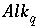
is the alkalinity of solution
q
, and  is the total inorganic carbon of solution
q
. The partial derivatives are evaluated numerically for each aqueous solution.
is the total inorganic carbon of solution
q
. The partial derivatives are evaluated numerically for each aqueous solution.
Inequality Constraints
This formulation of the inverse problem makes sense only if the values of the  's are small, meaning that the revised aqueous solution compositions (original plus
's are small, meaning that the revised aqueous solution compositions (original plus  's) do not deviate unreasonably from the original data. A set of inequalities places limits on the magnitudes of the
's) do not deviate unreasonably from the original data. A set of inequalities places limits on the magnitudes of the  's. The absolute value of each
's. The absolute value of each  is constrained to be less than or equal to a specified uncertainty limit, 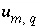
:
is constrained to be less than or equal to a specified uncertainty limit, 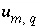
:
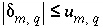
. (141)
Inequality constraints (equation 141) are also included for carbon(+4), alkalinity, and pH for each aqueous solution. In addition, the mixing fractions for the initial aqueous solutions ( ) are constrained to be nonnegative,
) are constrained to be nonnegative,
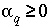
, (142)
and the final aqueous-solution mixing fraction is fixed to -1.0 (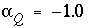
). If phases are known only to dissolve, or only to precipitate, the mole transfer of the phases may be constrained to be nonnegative or nonpositive:
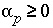
, (143)
or
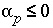
. (144)
| Next|| Previous || Top |